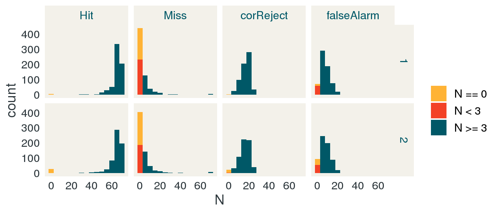
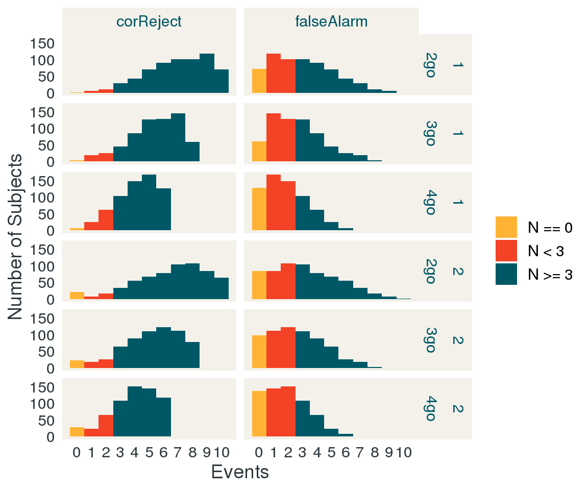
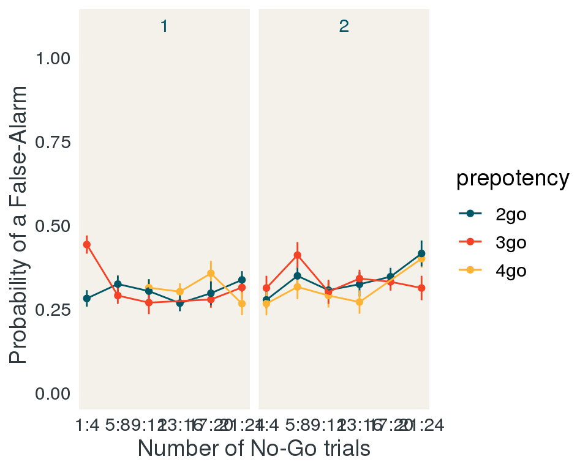

library(data.table)
library(psycho)
data.table::setDTthreads(3)
modal <- function(x){
t <- table(unlist(x))
n <- dimnames(t)[[1]]
return(n[which(t == max(t))])
}
read_carit_dir <- function(data_path, pattern = "*CARIT.*run[12]_wide.csv"){
#List all of the CARIT task files in the data directory
fnames <- dir(data_path,
pattern = pattern,
recursive = TRUE,
full.names = TRUE)
names(fnames) <- 1:length(fnames)
#Set the column names we want from each csv file
col_select <- c('condFile', 'trialNum', 'stim',
'corrAns', 'prepotency', 'ISI',
'shapeStartTime', 'shapeEndTime',
'fixStartTime','fixEndTime',
'nogoCondition','resp',
'trialResp.firstKey', 'trialResp.firstRt',
'corrRespMsg', 'corrRespCode',
'corrRespTrialType','isiPress.keys',
'isiPress.rt', 'hitCount', 'missCount',
'falseAlarmCount', 'corrRejectCount',
'totalAcc', 'goAcc', 'nogoAcc',
'goFiveBackAvg', 'nogoFiveBackAvg',
'totalFiveBackAvg')
#create a temporary data frame of all the data from all the csv files
adf <- data.table::rbindlist(
lapply(fnames, function(f){
#remove the first 4 rows of each data frame.
data.table::fread(f, select = col_select)[-(1:4),]
}),
idcol = TRUE)
#combine information about the files with the temporary data frame.
d <- data.table(.id = names(fnames),
filename = fnames,
sessionID = gsub('.*(HCD[A-Za-z0-9]+_V[0-9]_[A|B|X]).*', '\\1', fnames),
sID = gsub('.*(HCD[A-Za-z0-9]+)_V[0-9]_[A|B|X].*', '\\1', fnames))[adf, on = '.id']
return(d)
}
workspace_fname <- 'process_carit.rda'
if(!file.exists(workspace_fname)){
data_path <- '/ncf/hcp/data/CCF_HCD_STG_PsychoPy_files/'
intake_data_path <- '/ncf/hcp/data/intradb_intake/'
d <- read_carit_dir(data_path)
d_intake <- read_carit_dir(intake_data_path)
#remove long
readr::write_csv(d, 'CARIT_allRaw.csv')
demos <- data.table::fread('HCPD_COMBINED20200608.csv',
select = c('id', 'age', 'gender', 'site', 'RACE', 'SES_PLVL', 'SES_RLVL', 'income'))
staged <- data.table::fread('ccf_hcd_stg_2020-06-09.csv',
select = 'Subject')
public_release <- data.table::fread('HCD_V1_Release_Struct+fMRI_Merged_Adj.txt', header = FALSE, col.names = 'sID')
long <- data.table::fread('HCPD_LONGITUDINAL20200608.csv',
select = c('id', 'LONG_AGE'))
staged_dlmri <- data.table(sessionID = dir('/ncf/hcp/data/intradb_multiprocfix/', pattern = "HCD.*"))
staged_dlmri[, 'has_task_scan'] <- unlist(lapply(staged_dlmri$sessionID, function(sess){
length(dir(file.path('/ncf/hcp/data/intradb_multiprocfix/',
sess,
'/MultiRunIcaFix_proc/',
sess,
'/MNINonLinear/Results/'), pattern = 'tfMRI.*')) > 0
}))
staged_dlmri[, 'has_carit'] <- unlist(lapply(staged_dlmri$sessionID, function(sess){
length(dir(file.path('/ncf/hcp/data/intradb_multiprocfix/',
sess,
'/MultiRunIcaFix_proc/',
sess,
'/MNINonLinear/Results/'), pattern = 'tfMRI_CARIT.*')) > 0
}))
staged_dlmri[, 'has_guessing'] <- unlist(lapply(staged_dlmri$sessionID, function(sess){
length(dir(file.path('/ncf/hcp/data/intradb_multiprocfix/',
sess,
'/MultiRunIcaFix_proc/',
sess,
'/MNINonLinear/Results/'), pattern = 'tfMRI_GUESSING.*')) > 0
}))
staged_dlmri[, sID := gsub('.*(HCD[A-Za-z0-9]+)_V1_MR.*', '\\1', sessionID)]
setnames(demos, 'id', 'sID')
setnames(staged, 'Subject', 'sID')
setnames(long, 'id', 'sID')
#Some columns should be factors
factor_vars <- c('sessionID',
'stim',
'corrAns',
'prepotency',
'nogoCondition',
'resp',
'trialResp.firstKey',
'corrRespMsg',
'corrRespTrialType')
d[, (factor_vars) := lapply(.SD, as.factor), .SDcols = factor_vars]
d_intake[, (factor_vars) := lapply(.SD, as.factor), .SDcols = factor_vars]
d_combined <- data.table::rbindlist(list(staged = d, intake = d_intake), idcol = "data_source")
#Integrate demographic variables
carit <- demos[d_combined, on = 'sID']
#use the condition file name to figure out the run number
setnames(carit, 'condFile', 'runN')
carit[, runN := as.numeric(gsub('.*/scan([12])\\.csv', '\\1', runN))]
#rename corrAns to trialType
setnames(carit, 'corrAns', 'trialType')
#relabel the nogo condtion to be more accurate
carit[, nogoCondition := factor(nogoCondition,levels=c("prevRewNogo","neutralNogo"),labels=c("prevRewNogo","prevLossNogo"))
]
#relabel the prepotency factor to be more clear
carit[, prepotency := factor(prepotency,levels=c("2","3","4"),labels=c("2go","3go","4go"))]
#aggTrialN is trial number across both runs
carit[, aggTrialN := trialNum + 92*(runN - 1)]
carit[, RT.shape := trialResp.firstRt - shapeStartTime]
carit_by_run_SDT <- dcast(carit[, .N, by = c('sID', 'runN', 'corrRespTrialType') ], ... ~ corrRespTrialType, value.var = 'N', fill = 0)
carit_by_run_SDT[, c('dprime', 'beta', 'aprime', 'bppd', 'c') := psycho::dprime(Hit, falseAlarm, Miss, corReject)]
readr::write_csv(carit,"CARIT_allSubs.csv")
readr::write_csv(carit_by_run_SDT,"CARIT_allSubs_dprime.csv")
save.image(file = workspace_fname)
} else {
load(workspace_fname)
}At the moment, there are 2 participants who have too many trials for one run. The raw data file indicates that the same conditions file was used for each one, but it also indicates that only 1 run was run. We may ultimately be able to use these cases but I'm setting them aside for now.
#remove longitudinal subjects:
carit <- carit[!grepl('_V[2-9]_', filename),]
###INVESTIGATE FURTHER
duplicate_run_ids <- unique(carit[, .N, by = c('sID', 'runN')][N > 92, sID])
print(duplicate_run_ids)## [1] "HCD0197045" "HCD0353538"dim(carit)## [1] 203035 43carit <- carit[!sID %in% duplicate_run_ids]
dim(carit)## [1] 202667 43carit_pr_scan <- carit[public_release, on = 'sID', nomatch = 0]
carit_pr_scan <- staged_dlmri[carit_pr_scan, on = 'sID'][has_carit == TRUE]To model the BOLD using task behavior, we need to decide how to parse events.
We care primarily about how false alarms and correct rejections, but it would also be good to model out the go trials as well. We don't care too much about misses, and there likely will not be very many. Additionally, we might care about how many "Go" trials precede a "No-Go" trial. Finally, we are interested in how reward conditioning from a previously-run task impacts performance on "No-Go" trials.
FSL does not model the data all-at-once, though it does take into account variability at the first level.
Refer:
#For each person:
# get the number of events in each combination:
# 1. GO/NOGO
# 2. Prepotentcy POS/NEG
carit_pr_scan_trialtype_summary <- carit_pr_scan[, .N, by = c('sID', 'runN', 'corrRespTrialType')][corrRespTrialType != '']
trial_types <- data.table(expand.grid(sID = unique(carit_pr_scan$sID),
corrRespTrialType = unique(carit_pr_scan$corrRespTrialType),
runN = unique(carit_pr_scan$runN)))[corrRespTrialType != '']
carit_pr_scan_trialtype_summary <- carit_pr_scan_trialtype_summary[trial_types, on = c('sID', 'corrRespTrialType', 'runN')]
carit_pr_scan_trialtype_summary[, N := fifelse(is.na(N), 0, N)]
N_subs <- unique(carit_pr_scan_trialtype_summary[, 'sID'])[, .N]
no_trials_dt <- carit_pr_scan_trialtype_summary[N == 0][, list('N subjects' = .N,
'Prop Subjects' = round(.N/N_subs, 2)), by = c('corrRespTrialType', 'runN')]
no_trials_dt[, corrRespTrialType := factor(corrRespTrialType, levels = c('Hit', 'Miss', 'corReject', 'falseAlarm')) ]
setkey(no_trials_dt, runN, corrRespTrialType)
lt3_trials_dt <- carit_pr_scan_trialtype_summary[N < 3][, list('N subjects' = .N,
'Prop Subjects' = round(.N/N_subs, 2)), by = c('corrRespTrialType', 'runN')]
lt3_trials_dt[, corrRespTrialType := factor(corrRespTrialType, levels = c('Hit', 'Miss', 'corReject', 'falseAlarm')) ]
setkey(lt3_trials_dt, runN, corrRespTrialType)carit_pr_scan_trialtype_summary[, c('N = 0') := factor(fifelse(N == 0, 'N == 0',
fifelse(N < 3, 'N < 3', 'N >= 3')),
levels = c('N == 0', 'N < 3', 'N >= 3'))]
ggplot(carit_pr_scan_trialtype_summary, aes(x = N)) +
geom_histogram(aes(fill = `N = 0`), binwidth = 5) +
scale_fill_manual(values = apal[c(2, 5, 1)], name = '') +
facet_grid(runN ~ corrRespTrialType) +
jftheme
knitr::kable(no_trials_dt,
caption = sprintf('Number of participants without a particular trial type across all runs, out of N = %d',
N_subs))| corrRespTrialType | runN | N subjects | Prop Subjects |
|---|---|---|---|
| Hit | 1 | 5 | 0.01 |
| Miss | 1 | 208 | 0.32 |
| corReject | 1 | 1 | 0.00 |
| falseAlarm | 1 | 13 | 0.02 |
| Hit | 2 | 27 | 0.04 |
| Miss | 2 | 217 | 0.34 |
| corReject | 2 | 20 | 0.03 |
| falseAlarm | 2 | 40 | 0.06 |
knitr::kable(lt3_trials_dt,
caption = sprintf('Number of participants with < 3 events across all runs, out of N = %d',
N_subs))| corrRespTrialType | runN | N subjects | Prop Subjects |
|---|---|---|---|
| Hit | 1 | 5 | 0.01 |
| Miss | 1 | 440 | 0.69 |
| corReject | 1 | 1 | 0.00 |
| falseAlarm | 1 | 70 | 0.11 |
| Hit | 2 | 27 | 0.04 |
| Miss | 2 | 404 | 0.63 |
| corReject | 2 | 22 | 0.03 |
| falseAlarm | 2 | 93 | 0.15 |
carit_pr_scan_prepotency_summary <- carit_pr_scan[trialType == 'nogo'][, .N,
by = c('sID',
'runN',
'corrRespTrialType',
'prepotency')][corrRespTrialType != '']
trial_types_pp <- data.table(expand.grid(sID = unique(carit_pr_scan$sID),
corrRespTrialType = unique(carit_pr_scan[trialType == 'nogo', corrRespTrialType]),
prepotency = unique(carit_pr_scan[trialType == 'nogo', prepotency]),
runN = unique(carit_pr_scan$runN)))[corrRespTrialType != '']
carit_pr_scan_prepotency_summary <- carit_pr_scan_prepotency_summary[trial_types_pp, on = c('sID', 'corrRespTrialType', 'runN', 'prepotency')]
carit_pr_scan_prepotency_summary[, N := fifelse(is.na(N), 0, N)]
no_trials_pp_dt <- carit_pr_scan_prepotency_summary[N == 0][, list('N subjects' = .N,
'Prop Subjects' = round(.N/N_subs, 2)), by = c('corrRespTrialType', 'runN', 'prepotency')]
no_trials_pp_dt[, corrRespTrialType := factor(corrRespTrialType, levels = c('corReject', 'falseAlarm')) ]
no_trials_pp_dt[, prepotency := factor(prepotency)]
setkey(no_trials_pp_dt, runN, corrRespTrialType, prepotency)
lt3_trials_pp_dt <- carit_pr_scan_prepotency_summary[N < 3][, list('N subjects' = .N,
'Prop Subjects' = round(.N/N_subs, 2)), by = c('corrRespTrialType', 'runN', 'prepotency')]
lt3_trials_pp_dt[, corrRespTrialType := factor(corrRespTrialType, levels = c('corReject', 'falseAlarm')) ]
lt3_trials_pp_dt[, prepotency := factor(prepotency)]
setkey(lt3_trials_pp_dt, runN, corrRespTrialType, prepotency)carit_pr_scan_prepotency_summary[, c('N = 0') := factor(fifelse(N == 0, 'N == 0',
fifelse(N < 3, 'N < 3', 'N >= 3')),
levels = c('N == 0', 'N < 3', 'N >= 3'))]
ggplot(carit_pr_scan_prepotency_summary, aes(x = N)) +
geom_histogram(aes(fill = `N = 0`), binwidth = 1) +
scale_fill_manual(values = apal[c(2, 5, 1)], name = '') +
scale_x_continuous(breaks = c(0:10)) +
facet_grid(runN + prepotency ~ corrRespTrialType) +
labs(x = 'Events', y = 'Number of Subjects') +
jftheme
knitr::kable(no_trials_pp_dt,
caption = sprintf('Number of participants without a particular trial type across all runs, out of N = %d',
N_subs))| corrRespTrialType | runN | prepotency | N subjects | Prop Subjects |
|---|---|---|---|---|
| corReject | 1 | 2go | 1 | 0.00 |
| corReject | 1 | 3go | 4 | 0.01 |
| corReject | 1 | 4go | 7 | 0.01 |
| falseAlarm | 1 | 2go | 72 | 0.11 |
| falseAlarm | 1 | 3go | 60 | 0.09 |
| falseAlarm | 1 | 4go | 128 | 0.20 |
| corReject | 2 | 2go | 22 | 0.03 |
| corReject | 2 | 3go | 23 | 0.04 |
| corReject | 2 | 4go | 28 | 0.04 |
| falseAlarm | 2 | 2go | 84 | 0.13 |
| falseAlarm | 2 | 3go | 98 | 0.15 |
| falseAlarm | 2 | 4go | 137 | 0.21 |
knitr::kable(lt3_trials_pp_dt,
caption = sprintf('Number of participants with < 3 events across all runs, out of N = %d',
N_subs))| corrRespTrialType | runN | prepotency | N subjects | Prop Subjects |
|---|---|---|---|---|
| corReject | 1 | 2go | 18 | 0.03 |
| corReject | 1 | 3go | 48 | 0.07 |
| corReject | 1 | 4go | 94 | 0.15 |
| falseAlarm | 1 | 2go | 291 | 0.45 |
| falseAlarm | 1 | 3go | 335 | 0.52 |
| falseAlarm | 1 | 4go | 444 | 0.69 |
| corReject | 2 | 2go | 46 | 0.07 |
| corReject | 2 | 3go | 67 | 0.10 |
| corReject | 2 | 4go | 118 | 0.18 |
| falseAlarm | 2 | 2go | 276 | 0.43 |
| falseAlarm | 2 | 3go | 332 | 0.52 |
| falseAlarm | 2 | 4go | 435 | 0.68 |
What event time do we use for a correct rejection?
Prepotency: modeled as a factor, we have a lot of subjects with very few events. Should we collapse? Should we test linear, factorial effects? Can we do model comparison like this in FSL? What's the hypothesis we wish to test? Where is there a linear effect? Where is there a factorial effect?
There's a learning component here we are not really accounting for. Does prepotency predict a no-go trial?
num_fac <- function(x, levels = NULL){
if(is.null(levels)){
as.numeric(factor(x))
} else {
as.numeric(factor(x, levels = levels))
}
}
lag1_num_fac_diff <- function(x, levels = NULL){
y <- abs(num_fac(x, levels = levels) - num_fac(shift(x, fill = x[[1]], type = 'lag'), levels = levels))
return(y)
}
trial_structure <- unique(carit_pr_scan[, c('runN', 'trialNum', 'prepotency', 'trialType')])
setorder(trial_structure, runN, trialNum)
trial_structure[, trial_type_diff := lag1_num_fac_diff(trialType, levels = c('go', 'nogo')), by = c('runN')]
trial_structure[, chunkID := cumsum(trial_type_diff)]
trial_structure[, N_of_trialType := 1:.N, by = c('runN', 'chunkID')]
trial_structure[, prev_trial := shift(trialType, type = 'lag'), by = c('runN')]
trial_structure[, is_nogo := as.numeric(trialType == 'nogo')]
trial_structure[, next_is_nogo := shift(is_nogo, n = 1, fill = NA, type = 'lead'), by = c('runN')]
trial_structure[, c('runN', 'trialNum', 'trialType', 'next_is_nogo', 'N_of_trialType')]## runN trialNum trialType next_is_nogo N_of_trialType
## 1: 1 1 go 0 1
## 2: 1 2 go 0 2
## 3: 1 3 go 1 3
## 4: 1 4 nogo 0 1
## 5: 1 5 go 0 1
## ---
## 180: 2 88 go 1 4
## 181: 2 89 nogo 0 1
## 182: 2 90 go 0 1
## 183: 2 91 go 1 2
## 184: 2 92 nogo NA 1trial_structure <- trial_structure[trialType == 'go']
fit_b <- glm(next_is_nogo ~ N_of_trialType, data = trial_structure, family = 'binomial')
summary(fit_b)##
## Call:
## glm(formula = next_is_nogo ~ N_of_trialType, family = "binomial",
## data = trial_structure)
##
## Deviance Residuals:
## Min 1Q Median 3Q Max
## -1.5963 -0.8201 -0.3470 0.8100 1.5831
##
## Coefficients:
## Estimate Std. Error z value Pr(>|z|)
## (Intercept) -4.6426 0.7461 -6.223 4.89e-10 ***
## N_of_trialType 1.8629 0.3183 5.854 4.81e-09 ***
## ---
## Signif. codes: 0 '***' 0.001 '**' 0.01 '*' 0.05 '.' 0.1 ' ' 1
##
## (Dispersion parameter for binomial family taken to be 1)
##
## Null deviance: 176.60 on 135 degrees of freedom
## Residual deviance: 117.22 on 134 degrees of freedom
## AIC: 121.22
##
## Number of Fisher Scoring iterations: 5with(trial_structure, table(N_of_trialType, next_is_nogo))## next_is_nogo
## N_of_trialType 0 1
## 1 48 0
## 2 28 20
## 3 12 16
## 4 0 12trial_structure[, list(P_nogo = sum(next_is_nogo)/.N), by = 'N_of_trialType']## N_of_trialType P_nogo
## 1: 1 0.0000000
## 2: 2 0.4166667
## 3: 3 0.5714286
## 4: 4 1.0000000#contrast
c <- contr.treatment(4)
my.coding <- matrix(rep(1/4, 12), ncol=3)
my.simple<- c - my.coding
trial_structure[, N_of_trialType_fac := factor(N_of_trialType)]
contrasts(trial_structure$N_of_trialType_fac) <- my.simple
fit_b_fac <- glm(next_is_nogo ~ N_of_trialType_fac, data = trial_structure)
summary(fit_b_fac)##
## Call:
## glm(formula = next_is_nogo ~ N_of_trialType_fac, data = trial_structure)
##
## Deviance Residuals:
## Min 1Q Median 3Q Max
## -0.5714 -0.4167 0.0000 0.4286 0.5833
##
## Coefficients:
## Estimate Std. Error t value Pr(>|t|)
## (Intercept) 0.49702 0.03754 13.238 < 2e-16 ***
## N_of_trialType_fac2 0.41667 0.07647 5.449 2.40e-07 ***
## N_of_trialType_fac3 0.57143 0.08908 6.415 2.32e-09 ***
## N_of_trialType_fac4 1.00000 0.12090 8.271 1.26e-13 ***
## ---
## Signif. codes: 0 '***' 0.001 '**' 0.01 '*' 0.05 '.' 0.1 ' ' 1
##
## (Dispersion parameter for gaussian family taken to be 0.1403319)
##
## Null deviance: 31.059 on 135 degrees of freedom
## Residual deviance: 18.524 on 132 degrees of freedom
## AIC: 124.82
##
## Number of Fisher Scoring iterations: 2#something something updating bayesian priors.P(FA | Prepotency) across the trials
modnum = 4
othernum = 24/modnum - 1
carit_pr_scan_learning <- carit_pr_scan[trialType == 'nogo']
setorder(carit_pr_scan_learning, 'sID', 'runN', 'trialNum')
carit_pr_scan_learning[, nogotrial := 1:.N, by = c('sID', 'runN')]
carit_pr_scan_learning[, nogotrial_group := (nogotrial - 1) %/% modnum]
carit_pr_scan_learning_summary <- carit_pr_scan_learning[, .(p_FA = mean(corrRespTrialType == 'falseAlarm', na.rm = TRUE),
N = .N), by = c('runN', 'nogotrial_group', 'prepotency')]
carit_pr_scan_learning_summary[, p_FA_SE := sqrt( p_FA * (1 - p_FA) / N)]
carit_pr_scan_learning_summary[, c('p_FA_u', 'p_FA_l') := list(p_FA + qnorm(.975) * p_FA_SE, p_FA + qnorm(.025) * p_FA_SE)]ggplot(carit_pr_scan_learning_summary, aes(x = nogotrial_group, y = p_FA, group = prepotency, color = prepotency)) +
geom_errorbar(aes(ymin = p_FA_l, ymax = p_FA_u), width = 0) +
geom_point() +
geom_line() +
facet_grid( ~ runN) +
coord_cartesian(y = c(0, 1)) +
scale_x_continuous(breaks = 0:othernum, labels = sprintf('%d:%d', (0:othernum)*modnum+1, (0:othernum+1)*modnum)) +
scale_color_manual(values = apal[c(1,5,2)]) +
labs(x = 'Number of No-Go trials', y = 'Probability of a False-Alarm') +
jftheme